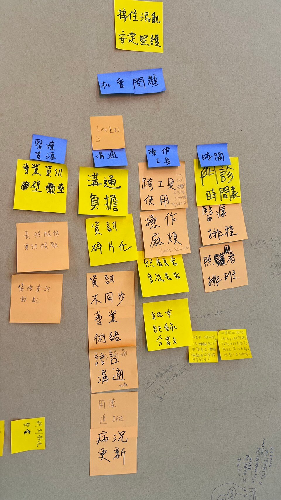
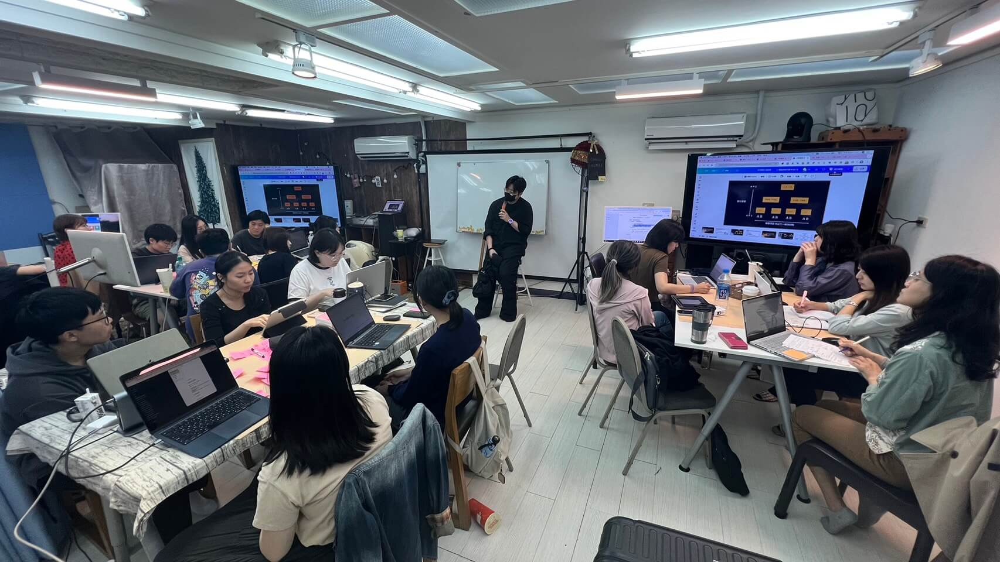
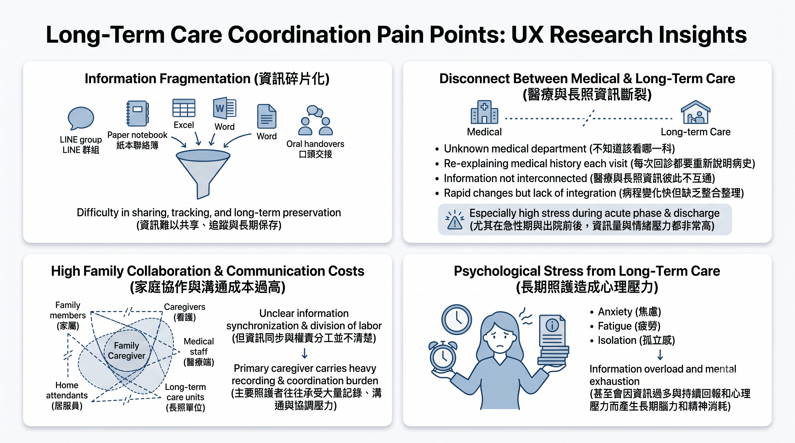
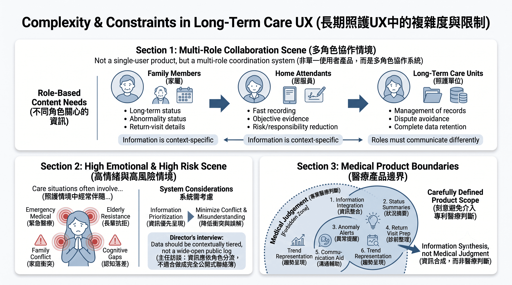
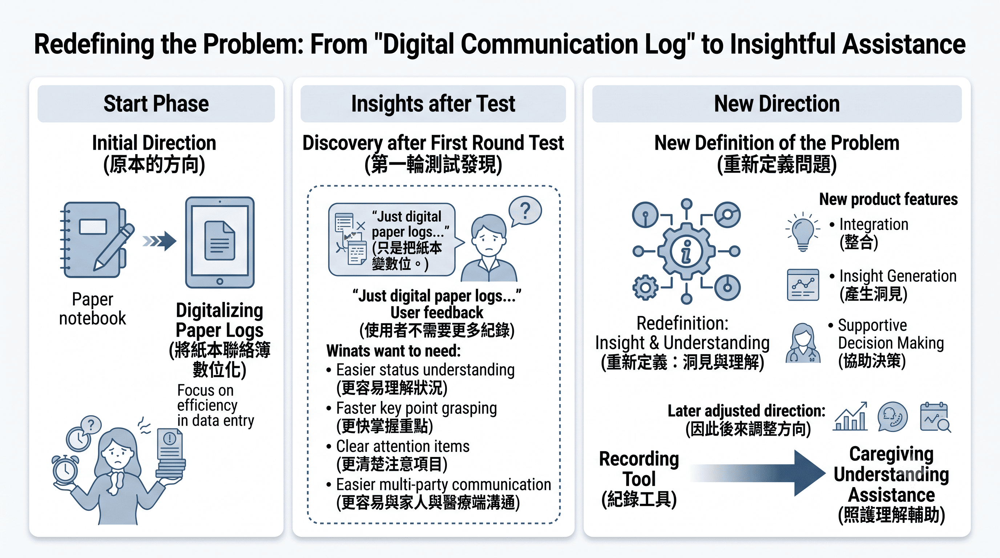
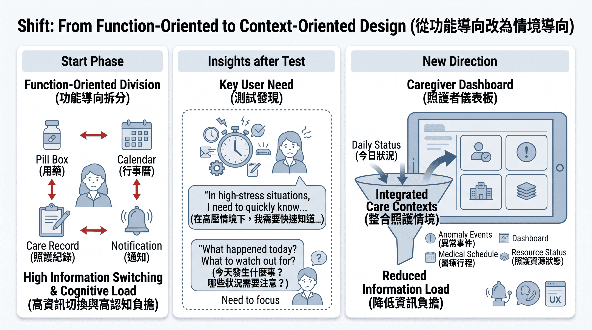
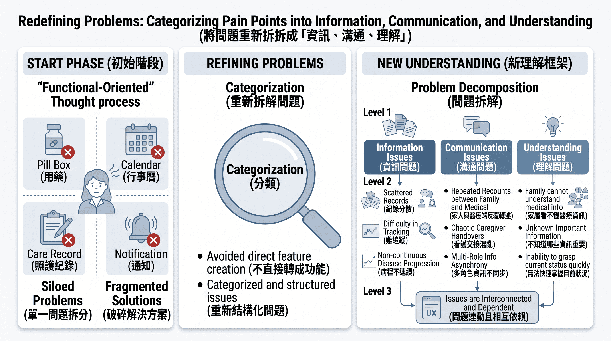
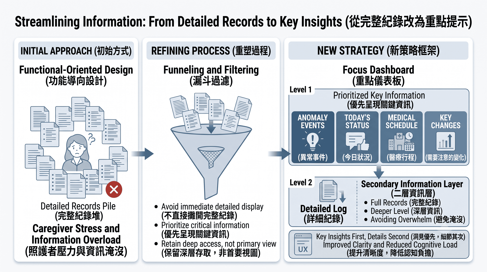
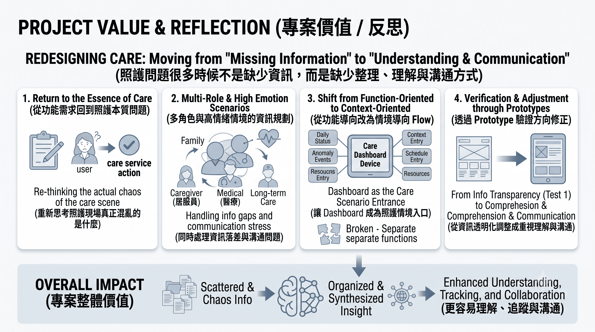

照護問題很多時候不是缺少資訊，而是資訊太分散、太難理解。
在整理訪談後，發現家屬真正卡住的地方，不只是「沒有工具」，而是：
• 照護資訊高度碎片化
• 家人與醫療端溝通成本高
• 長期照護造成資訊疲勞
• 不知道哪些資訊需要優先注意
• 看得見資訊，但不一定理解目前狀況

• 多角色協作情境：專案並不是單一使用者產品，而是多角色協作系統，不同角色之間在意的點也都不一樣。
• 高情緒與高風險情境：照護情境中經常伴隨多種狀況，因此不能只是「把資訊全部攤開」。
• 醫療產品邊界：在醫療與長照情境中，還是需要刻意避免讓產品介入專業醫療判斷。

從「數位聯絡簿」重新定義問題
一開始原本比較偏向「將紙本聯絡簿數位化」，但在第一輪測試後發現，即使資訊透明化，使用者仍認為「只是把紙本變數位。」這讓我重新思考使用者真正需要的，其實不是更多紀錄，
因此後來將方向調整為：從紀錄工具 → 資訊整合與照護理解輔助。
從功能導向改為情境導向
一開始也曾以：用藥、行事曆、照護紀錄、通知等功能進行拆分。但後來發現照護者真正需要的不是很多功能，而是在高壓情境下快速知道：「今天發生什麼事？哪些狀況需要注意？」
因此後來改以「照護情境整合」為主。
在 UI Flow 中，首頁改為 Dashboard，整合：今日狀況、異常事件、醫療行程、照護資源狀態、降低資訊切換與閱讀負擔。
將問題重新拆成「資訊、溝通、理解」
沒有直接把痛點轉成功能，而是先重新拆解問題結構：資訊問題、溝通問題、理解問題，因為很多照護問題其實是連動的，而不是單一功能可以解決。
從完整紀錄改為重點提示
照護資訊量非常大，如果全部攤開反而容易增加使用壓力，因此在後來規劃上找出優先級，完整紀錄仍然存在，但不放在第一層，避免使用者一打開系統就被大量資訊淹沒。




Dashboard｜照護狀況整合入口
首頁以 Dashboard 作為核心入口。整合：今日照護狀況、異常事件、醫療行程、照護資源狀態、快速資訊摘要、讓家屬不需要反覆切換頁面，也能快速掌握目前照護情況。
醫療 Timeline｜整理病程脈絡
將：放療、化療、回診、急診、ICU、住院／出院等事件整合進時間軸中，讓家屬能更容易理解病程與照護事件之間的關聯，也方便回診前快速整理資訊。
異常事件高亮
針對：出血、跌倒、嘔吐、食慾異常等事件進行高亮提示，目的是讓重要資訊更容易被注意，而不是埋在大量紀錄中。
診前摘要與詢問整理
第二輪測試中加入：診前摘要、建議詢問方向、即時衛教資訊、協助家屬在看診前更容易整理狀況與溝通內容，這部分不是提供醫療建議，而是降低家屬面對專業資訊時的混亂與焦慮感。
趨勢圖與個人化基準
測試中，使用者對圖像化趨勢有明顯正向反應，相較於大量數字，趨勢圖能更直覺地看出異常波動，也方便回溯生活事件。另外，不同長輩的正常值差異很大，因此後續也思考導入：個人化健康區間，避免只套用一般標準值。
Test 1｜數位聯絡簿方向
第一輪 Prototype 比較偏向：照護紀錄數位化
雖然改善了資訊透明度，但使用者仍認為只是把紙本變數位，也代表紀錄本身仍然是一種負擔。測試滿意度約停留在 7.2 分。
Test 2｜資訊整合與理解輔助方向
第二輪加入：診前摘要、異常提醒、趨勢資訊、即時衛教資訊後，使用者開始感受到：更容易理解狀況、更有方向感、焦慮下降、與醫療端溝通更順暢，測試滿意度提升至 9.0 分。
這個專案讓我重新理解，照護真正的痛點並不在於資訊不足，而在於資訊分散、難以理解，以及跨角色之間缺乏有效溝通。因此，我們的目標不是單純設計一個照護 App，而是重新設計高齡照護中的資訊架構與協作流程，讓照護資訊能夠更容易被理解、持續追蹤，並在家屬、照護者與醫療人員之間順利流動。我認為，這個專案最大的規劃特色有四個：
1. 從功能需求回到照護本質問題
不是直接堆疊功能，而是重新思考照護現場真正混亂的是什麼。
2. 多角色與高情緒情境的資訊規劃
同時處理家屬、居服員、醫療與長照端之間的資訊落差與溝通問題。
3. 從功能導向改為情境導向 Flow
讓 Dashboard 成為照護情境入口，而不是切碎功能頁面。
4. 透過 Prototype 驗證方向修正
從 Test 1 的資訊透明化，逐步調整成更重視資訊理解與溝通輔助的方向。
